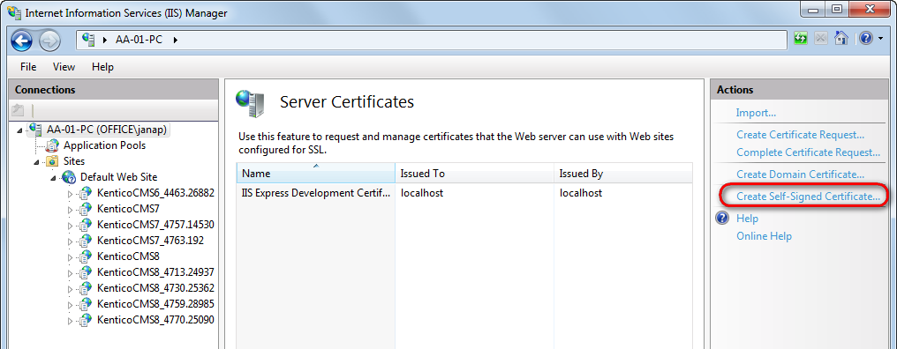

Configuring SSL
The Secure Sockets Layer protocol is used to encrypt Internet communication. This is important for protecting the privacy of your users and for safekeeping sensitive information that is being sent. If you do not protect the sensitive information on your website, you can become susceptible to man-in-the-middle attacks. Such attacks happen when the attacker intercepts a communication between two systems (e.g., a server and a client web browser). The attacker can eavesdrop messages being sent and also possibly alter them without being detected.
How to start using SSL on your website
Obtain a certificate from a certificate authority or create a self-signed certificate.
Configure pages in Kentico to redirect users to secured URLs.
What are SSL certificates
SSL certificates are electronic documents, which use a digital signature to bind a public key (needed to establish a secure connection) with a server. The digital signature is provided either by the certificate itself (a self-signed certificate) or by a Certificate Authority:
Self-signed certificates
You can create them easily by yourself, but they are less secure than those signed by a Certificate Authority.
Great for testing servers and suitable for collecting personal (non-financial) information.
You should not use a self-signed certificate on an e-commerce site.
Certificates signed by a Certificate Authority
Must be issued by a Certificate Authority, which verifies that the subject (server) of the certificate is who he claims to be.
Can be expensive, but provide high security.
It is generally recommended to use this type of certificate.
When should you use the SSL protocol
In general, every time you transmit any sensitive data. This includes cases:
When your website contains login forms.
When your website transmits personal information (e.g., social security numbers) and otherwise sensitive information (e.g., e-mails).
Especially when your website collects and transmits credit card information (to prevent man-in-the-middle attacks).
You do not need SSL if your website only forwards users to third party payment processors (like PayPal) for entering credit card information. However, you have to make sure that users do not enter credit card information on your site.
Creating a self-signed certificate in IIS
Open IIS Manager.
Click on the name of your server in the Connections column on the left.
Double-click the Server certificates.

In the Actions pane, click Create Self-Signed Certificate.

In the Actions pane, click Create Self-Signed CertificateType a friendly name for the certificate in the Specify a friendly name for the certificate box, and click OK.
Type a friendly name for the certificate in the Specify a friendly name for the certificate box, and click OK
The IIS server creates a new self-signed certificate with the name of your server as its common name.
Binding a certificate to a website
If you already have an SSL certificate (self-signed or from a Certificate authority), you need to configure the IIS server so that it can use it for incoming secure connections.
Open IIS Manager.
Select a website, you want to bind the certificate to, in the Connections column on the left.
Click Bindings... in the Actions column.
Select your website and click Bindings...Click Add...
Change the Type to https.
Select the certificate from the list.
Select the certificate from the listClick OK and close the Site bindings dialog.
The IIS server is now ready for using the assigned certificate with SSL handshake for incoming connections.
Configuring pages in Kentico to use HTTPS
Kentico allows you to specify which of the website's pages should only be accessible over a secured protocol (HTTPS). When users try to open such a page with the standard HTTP protocol, they will be automatically redirected to the secured version of the same page (using the https URL scheme).
When you set up a page to require SSL access, the system only redirects HTTP requests to the secure HTTPS protocol. Kentico does not configure the website to use the HTTPS protocol. You still need to adjust your IIS settings to use SSL/HTTPS.
Securing individual web pages
Open the Pages application.
Select a page in the content tree.
On the Properties -> Security tab in the Access section switch Requires SSL to Yes.
Click Save.
Now all users attempting to access the page will always be redirected to the HTTPS version of the page's URL.
Securing the administration interface
You may enable that all pages belonging to the administration interface will be accessible only through the SSL protocol.
Navigate to Settings -> Security & Membership.
In the Administration category, select the Use SSL for administration interface field.
Click Save.
Now all editors and administrators will be redirected to UI pages using the https URL scheme when they sign in to the administration interface.
This setting applies to all sites in the system. It is available only if you select the (global) option from the Site drop-down list.